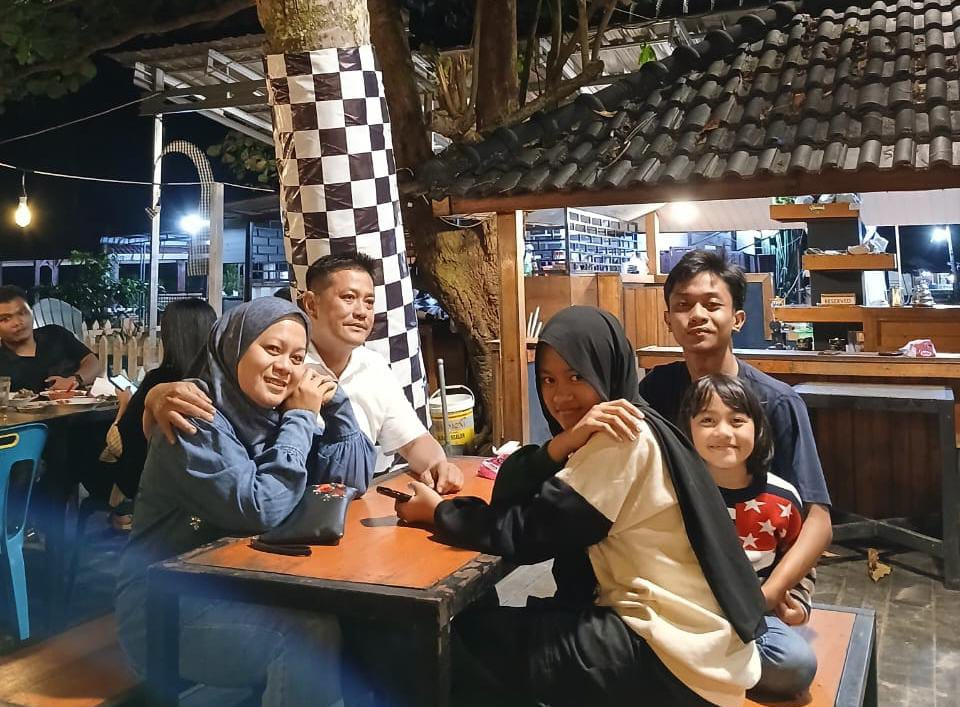
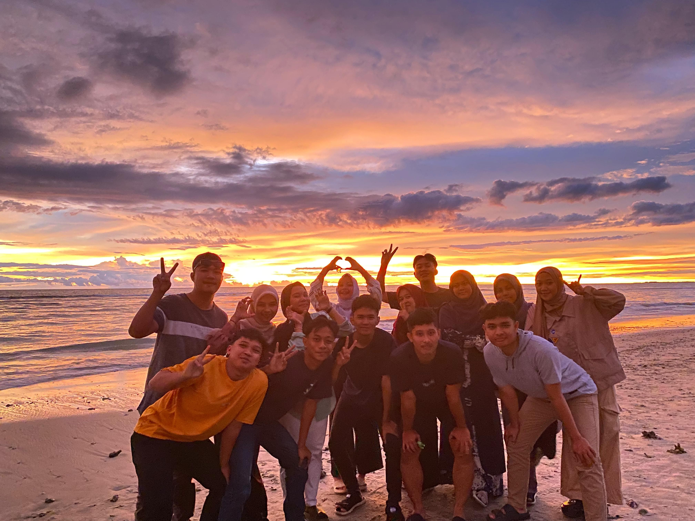

Asal Pendidikan
SD 158493 SIBULUAN 1B
Sibuluan Indah, Kec. Pandan, Kabupaten Tapanuli Tengah, Sumatera Utara 22538.

Pondok Pesantren Ar-Raudlatul Hasanah 2 Lumut
Location: Lumut, Indonesia. A traditional Islamic boarding school focusing on religious education and leadership skills.
Universitas Islam Negeri Imam Bonjol Padang
Location: Padang, Indonesia. A prestigious Islamic university that combines academic studies with Islamic values.
Keluarga

SUPARDY FAMILY
Location: Lumut, Indonesia. A traditional Islamic boarding school focusing on religious education and leadership skills.

AJO FAMILY
Location: Padang, Indonesia. A prestigious Islamic university that combines academic studies with Islamic values.